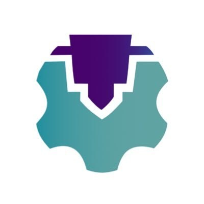
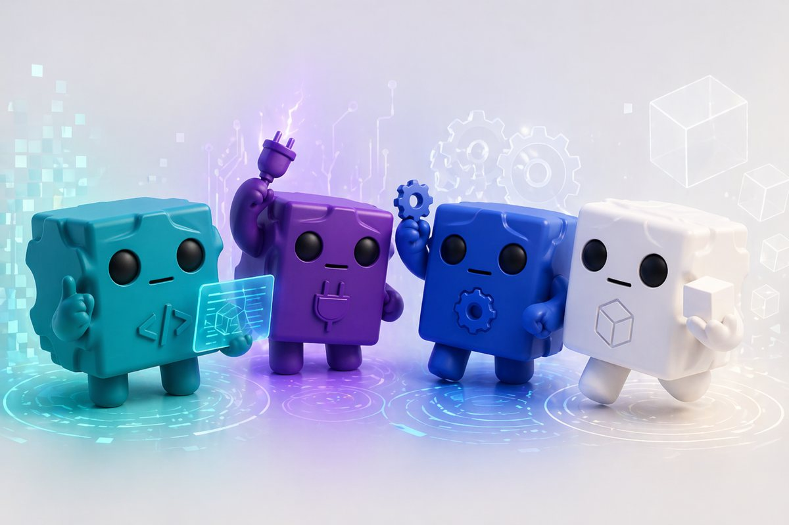

MANUFACTURING COMMUNITY
Which Maker Are You?
هذا الاختبار يساعدك تكتشف نمطك من خلال 8 أسئلة، بدون إجابات صحيحة أو خاطئة.
اختياراتك توضح أسلوبك في التقنية والتصنيع وتحدد الشخصية الأقرب لك.

السؤال 1 من 8
12%
صوّر الكرت واستلم قطعتك حسب شخصيتك.